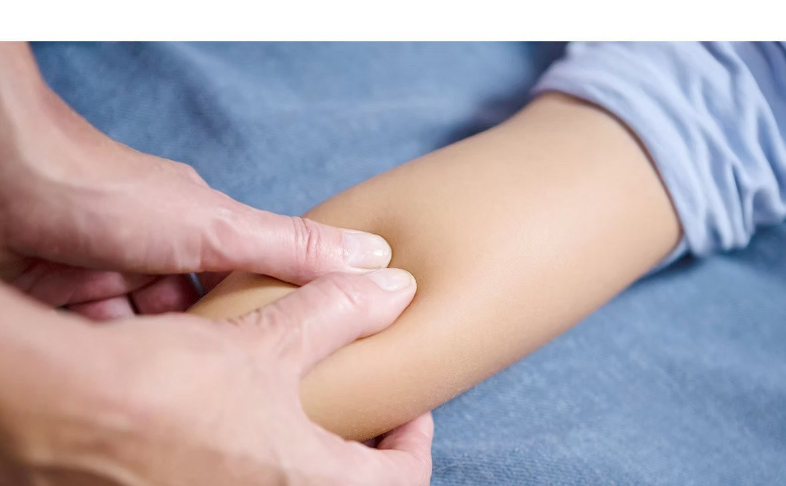

곧은 발육 케어

우리 아이 바른 자세, 곧은 발육 케어
관리하고 계시나요?
아이가 나쁜 자세로 지내거나, 대근육과 소근육의 고른 발달에
문제가 생기면 신체 균형이 무너지게 됩니다
경직된 근육과 근막의 문제는 성장에 안 좋은 영향을 끼치기도 합니다
187 성장클리닉의 곧은 발육 케어는 성장판 주변의 근육을 자극하여 혈액 순환을 돕고,
인대와 근막의 스트레칭을 도와 곧은 자세에 도움을 줍니다

아이의 자세를 결정하는 곳은
척추와 골반입니다
척추가 휘면 체형이 삐뚤어지면서 관절 사이의 연골에 영양공급이 충분히 이루어지지 못합니다
결과적으로 키가 제대로 클 수 없게 되는데 성장기는 키가 크는 시기이므로
한쪽으로 굽은 척추는 나날이 더 휘어질 수 있습니다
연세새봄은 전신 X-Ray를 통해 척추 측만, 요추 전만, 거북목, O-다리, X-다리 개선을 위해
스트레칭과 마사지 프로그램, 체형 교정운동 프로그램을 시행하고 있습니다
우리 아이를 위한 곧은 발육 케어는 187성장 클리닉과 함께!

척추 측만 개선

아이 요추 전만

아이 거북목

O&X 다리 교정